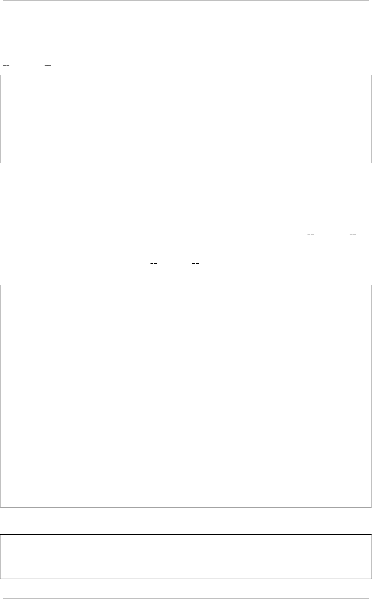

《Python Cookbook》第三版, Release 2.0.0
11.3.2 解决方案
假设装饰器是通过 @wraps (参考 9.2 小节)来实现的，那么你可以通过访问
wrapped 属性来访问原始函数：
>>> @somedecorator
>>> def add(x, y):
... return x+y
...
>>> orig_add =add.__wrapped__
>>> orig_add(3,4)
7
>>>
11.3.3 讨论
直接访问未包装的原始函数在调试、内省和其他函数操作时是很有用的。但是我们
这里的方案仅仅适用于在包装器中正确使用了 @wraps 或者直接设置了 wrapped 属
性的情况。
如果有多个包装器，那么访问 wrapped 属性的行为是不可预知的，应该避免这
样做。在 Python3.3 中，它会略过所有的包装层，比如，假如你有如下的代码：
from functools import wraps
def decorator1(func):
@wraps(func)
def wrapper(*args, **kwargs):
print('Decorator 1')
return func(*args, **kwargs)
return wrapper
def decorator2(func):
@wraps(func)
def wrapper(*args, **kwargs):
print('Decorator 2')
return func(*args, **kwargs)
return wrapper
@decorator1
@decorator2
def add(x, y):
return x+y
下面我们在 Python3.3 下测试：
>>> add(2,3)
Decorator 1
Decorator 2
5
11.3. 9.3 解除一个装饰器 305